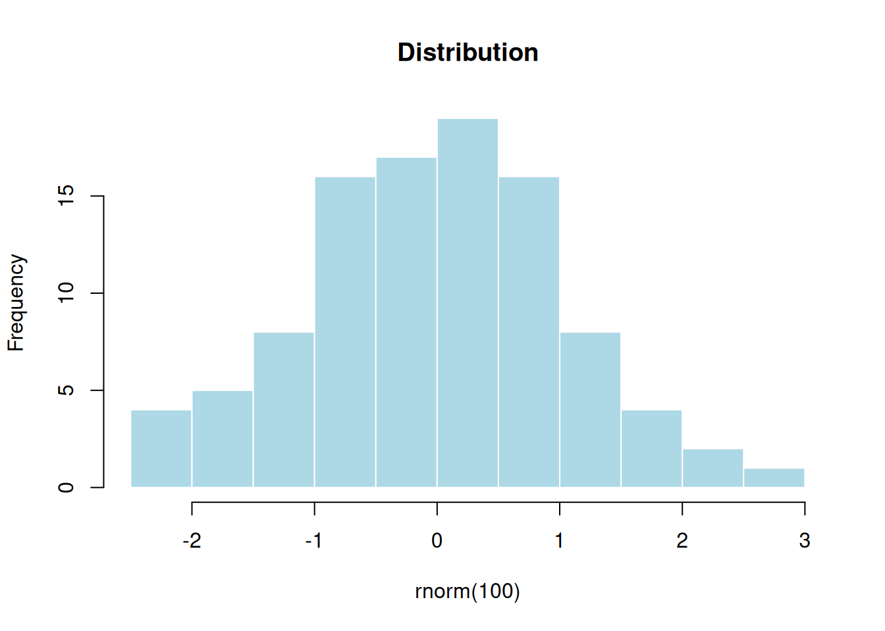

Advanced Quarto Article
2026-05-08
3 Advanced Quarto Features
Cross-References
Quarto makes it easy to create cross-references. For example, see Figure 1 for a scatter plot and Table 1 for a summary table.
Code

Summary Tables
Code
| Statistic | X | Y |
|---|---|---|
| Mean | 0.090 | 0.127 |
| Median | 0.062 | 0.137 |
| SD | 0.913 | 1.865 |
| Min | -2.309 | -4.586 |
| Max | 2.187 | 4.675 |
As shown in Table 1, the variables have similar distributions.
Code Folding
You can make code chunks foldable:
Show the code for data preparation
# Prepare more complex data
complex_data <- data.frame(
id = 1:50,
group = rep(c("A", "B"), each = 25),
value1 = rnorm(50, 100, 15),
value2 = rnorm(50, 50, 10)
)
# Calculate group statistics
group_stats <- aggregate(
cbind(value1, value2) ~ group,
data = complex_data,
FUN = function(x) c(mean = mean(x), sd = sd(x))
)
print(group_stats)
#> group value1.mean value1.sd value2.mean value2.sd
#> 1 A 101.61247 14.63952 51.727220 10.047051
#> 2 B 98.13191 13.84514 53.261796 8.934998Tabsets

#> id group value1 value2
#> Min. : 1.00 Length :50 Min. : 79.60 Min. :32.43
#> 1st Qu.:13.25 N.unique : 2 1st Qu.: 89.29 1st Qu.:46.76
#> Median :25.50 N.blank : 0 Median : 96.64 Median :51.04
#> Mean :25.50 Min.nchar: 1 Mean : 99.87 Mean :52.49
#> 3rd Qu.:37.75 Max.nchar: 1 3rd Qu.:107.93 3rd Qu.:59.34
#> Max. :50.00 Max. :132.98 Max. :72.93#> id group value1 value2
#> 1 1 A 132.98216 46.24397
#> 2 2 A 119.68619 44.38124
#> 3 3 A 96.02282 46.56083
#> 4 4 A 108.14791 50.90497
#> 5 5 A 93.78490 65.98509
#> 6 6 A 92.85630 49.11435
#> 7 7 A 88.17096 60.80799
#> 8 8 A 91.08074 56.30754
#> 9 9 A 124.76361 48.86360
#> 10 10 A 99.18958 34.67098Advanced Callouts
Important Considerations
When using this package in production:
- Always validate input data
- Check for missing values
- Consider computational complexity
Performance Warning
Large datasets may require additional memory and processing time.
Columns Layout
Left Column
This demonstrates a two-column layout in Quarto.
- Feature 1
- Feature 2
- Feature 3
Right Column
You can place different content in each column.
